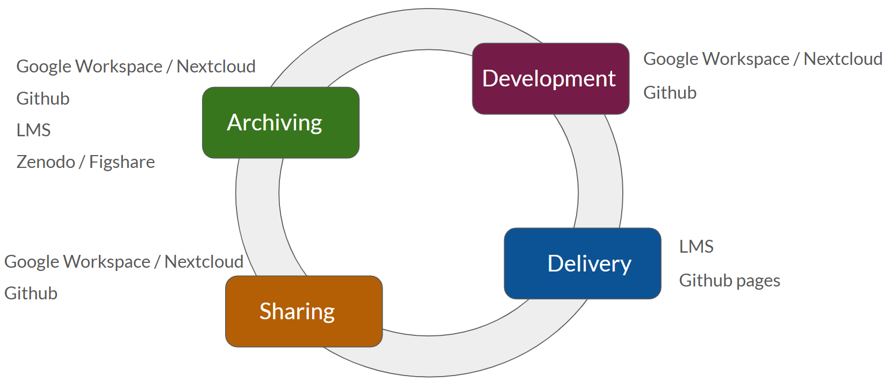

3. How to host your training
Learning Outcomes
By the end of this session, learners will be able to:
- List common e-learning platforms
- Explain what the SCORM format is
- Understand how Nicholl’s Five Steps and the Training Life Cycle relate to FAIR
- Describe pros and cons of different Learning Management Systems, from a FAIR perspective
- Create a GitHub page to host and deliver training
- Describe how to make your training material FAIR using only Google drive
3.1 Presentation
Here you can find the presentation for this session:
The full presentation can be downloaded as a pdf here.
3.2 Hosting and delivery
When it comes to hosting and delivering training materials in line with FAIR principles, there are several tools and platforms that can help ensure your content is well-organized and accessible. Hosting your materials can involve cloud-based platforms like Google workspace or Nextcloud, which are ideal for collaboration and real-time editing. These platforms allow users to store documents, presentations, and other data in one place, making it easier for teams to work together on developing training materials.
For more technical users, GitHub offers a robust version control system that allows for collaborative development and easy sharing of materials. This platform is particularly useful for archiving content, as it keeps a history of all changes made, ensuring that different versions of the materials are available for future use or review.
To deliver training materials effectively, many educators rely on a Learning Management System (LMS). Popular LMS platforms like Moodle, Canvas, and OpenEDX help trainers manage and deliver content to students, track learner progress, and create a more engaging learning experience. For those who prefer an open, web-based approach, GitHub Pages allows you to turn a GitHub repository into a simple website, making it a lightweight yet flexible solution for course delivery.
The training life cycle

Training materials go through several phases in their lifecycle: development, delivery, sharing, and archiving. In the development phase, tools like Google workspace or GitHub allow for collaborative creation of content. Once the materials are ready, they move into the delivery phase, where LMS platforms or GitHub Pages are used to distribute them to learners. The sharing phase ensures that materials are made publicly available, ideally according to FAIR principles, through platforms like Zenodo, GitHub, or even a public LMS site. Finally, in the archiving phase, content is stored for future use, ensuring it remains accessible and reusable for future trainers or trainees.
Learning Management systems and Google drive
Using Google drive alongside an LMS can enhance the delivery and management of training materials. Google drive provides a collaborative environment for creating course materials — such as documents, presentations, and exercises — which can then be shared via a more structured LMS like Moodle or OpenEDX. The combination of these tools ensures that the content remains easily accessible and organized, while the LMS provides tools to track learner engagement and progress. Both systems support various file types and have flexible access control options, ensuring that materials remain FAIR-compliant.
To ensure interoperability and flexibility, training materials should comply with e-learning standards.
SCORM (Sharable Content Object Reference Model) is one of the earliest and most widely used standards. It defines how online learning content and LMSs communicate with each other, for example for tracking whether a learner has completed a module or how much time they spent on it. SCORM packages training materials into a standardized format (usually a .zip file) that can be imported into almost any LMS.
xAPI (Experience API), also known as Tin Can API, is a newer and more flexible standard. Unlike SCORM, it can track learning experiences both inside and outside an LMS, for example attending a workshop, watching a video, or participating in a simulation. It then stores this data in a Learning Record Store (LRS).
CMI5 builds on xAPI, combining the structure of SCORM with the versatility of xAPI. It supports traditional LMS functions like course launching and completion tracking while also enabling richer, modern learning experiences across various tools and devices.
Together, these standards ensure that your content remains interoperable and reusable across different platforms and learning scenarios.
GitHub and GitHub pages
For trainers looking to develop, share, and archive content in a more open environment, GitHub offers tools for collaborative content development. GitHub Pages provides a simple way to turn your repository into a website, making it an excellent tool for delivering course materials. Best practices for working with GitHub include using releases to create different versions of course materials and enabling collaboration by allowing multiple contributors to work on the same content. GitHub also supports public access and indexing by search engines, making your materials findable and accessible to a wide audience.
3.3 Discussion topics
Reflection
| Findable | Accessible | Interoperable | Reusable | |
|---|---|---|---|---|
| Google drive | No, not searchable | |||
| Github | Yes, can be made public and accessible to all |
|||
| LMS | Exported in SCORM format |
Adapted from FAIR handbook (chapter 03), by ELIXIR training platform. CCBYSA 4.0 license
How do the above hosting and delivery alternatives do when looked at through the FAIR principles? Fill in the missing cells.
3.4 Case studies
The following three case studies describe how different trainers set up and deliver their courses. Analyze each case and assess how FAIR the training materials are throughout their life cycle.
RNAseq analysis course
Kate delivers an onsite course in RNAseq analysis. She sends out all relevant course information by email to the students. During the course she has prepared powerpoint slides for her presentations, and exercise instructions that she has in a Google drive folder she shares with her students. After the course is done, she sends the slides as pdfs to her students.
Microscopy course
Steve organizes a course in microscopy, delivered online. He also has a Google drive folder where he prepares all his slides, exercises, and other relevant information regarding the course. This folder is read-only for anyone with the link. He sets up a course website in Canvas, where he links all information from his Google drive, including presentation slides and exercises. He makes the course website public, so everyone can see it. Plus, he links to the original Google drive folder from Canvas.
R course
Jane teaches a hybrid course in R. She has set up a course website using GitHub pages and Quarto. She has a GitHub repo where she creates all information regarding the course, including slides and exercises using markdown. She uses releases to separate different instances of her course. All relevant information is published on the GitHub page, with the links to the GitHub repo.
3.5 Exercise: Set up a course website
Now that you have your course syllabus and learning outcomes, it’s time to set up a course website where you can display all this information. A course website helps make your training findable and accessible to your students — and to the rest of the world.
Depending on your technical skills and preferences, you may choose one of the three options below for hosting your website:
No knowledge of GitHub required
Basic knowledge of GitHub (clone, push, pull) and basic Markdown skills required
Intermediate knowledge of GitHub (clone, push, pull, gh-pages configuration) and basic Quarto knowledge required
Using OpenEdx and Google drive (easy)
Your organization might already have its own LMS set up for you to use, but here we will try out the process using the Open edX Sandbox, a platform designed for experimenting with course creation. Please note that this environment is only for testing purposes, all data is deleted every day! (This also means that anything you add today will unfortunately need to be re-created tomorrow, so try not to add too much information during this exercise).
If you are tech-savvy, you can set up your own instance of open edX, that way your data will not be lost. For more information, see here.
Steps:
- Create a Google drive folder where you will put the course materials
- Create a user account at https://sandbox.openedx.org/
- Go to the tab
Studioand click theNew coursebutton - Fill in the information required and create the course
- Make sure you have your course syllabus and learning outcomes in separate documents in the Google drive folder
- Embed the syllabus and learning outcomes documents in iframes.
- In Google drive: File -> Share -> Publish to web. Click on the Embed tab, and copy the code
- In Open edX: go to Content -> Outline
- Click on
New secion-> Rename the section to Syllabus - Add a new subsection called Course description
- Click on
New unit-> Add a Text component to it: Text -> IFrame Tool -> Select - In the editor, click on the three dots in the top right corner and click
HTML, this will switch to HTML mode - Remove everything there and paste the embed code from google
- You might have to adjust the size:
<iframe src="<url>" width="900px" height="900px" scrolling="no" frameborder="0"></iframe> - If you want you can put the learning outcomes as a separate section or subsection
You have now set up a simple course website using Open edX and Google Drive!
Using Github and Liascript (intermediate)
This exercise assumes basic familiarity with GitHub and Markdown. Cloning the repository locally is optional for this exercise — it is not required to generate the course website in LiaScript, but it is useful for future edits or offline work.
Steps:
- Create a new GitHub repository from the template
- Go to the template repository: https://github.com/vibbits/training_material_template
- On the repository page, click the green “Use this template” button near the top right (next to the Code button)
- Select “Create a new repository”
- Give your new repository a name (for example, my-training-course)
- Make sure to select Public under Repository visibility, so LiaScript can access it
- Click “Create repository from template”
- Clone the repo to your local computer
- On your new repository’s page (your version, not the template), click the green “Code” button
- Copy the HTTPS link shown (it will look like https://github.com/yourusername/my-training-course.git)
- Open GitHub Desktop or your terminal, and clone the repository:
- In GitHub Desktop: Click File → Clone repository, then paste the URL
- In the terminal:
git clone https://github.com/yourusername/my-training-course.git
- Generate the LiaScript course website
- Go to your GitHub repository in your browser (the one you just created from the template)
- Open the file called README.md — it should display the formatted text
- In the top-right corner of that file’s view, click the “Raw” button. This opens a plain text version of the Markdown file.
- Copy this page’s URL and paste it here: https://liascript.github.io/.
You can share the same raw README.md URL with your course participants. They can paste it into https://liascript.github.io/ themselves, and the course website will appear in their browsers.
- Update the README.md file on your locally cloned repository to include your learning outcomes and syllabus. Then push the changes to GitHub so they are reflected on the course website. You may need to force refresh your browser (e.g., Ctrl+Shift+R or Cmd+Shift+R) to see the updated content appear.
You have now created a course website using GitHub and LiaScript!
Using Github pages and Quarto (advanced)
This option assumes you are comfortable with GitHub, Quarto, and deploying via gh-pages. No extensive documentation is provided here, but the official Quarto documentation is very good.
Steps:
- Create a repository on GitHub and start a new Quarto project. You can use the Liascript template from the previous option as inspiration.
- Configure gh-pages to display your site. Official Quarto documentation: https://quarto.org/docs/websites/
When creating your Quarto course website, make sure to:
- Add authors where applicable
- Include a page with your learning outcomes and course syllabus
You have now created a course website using GitHub Pages and Quarto, ready for future training delivery!